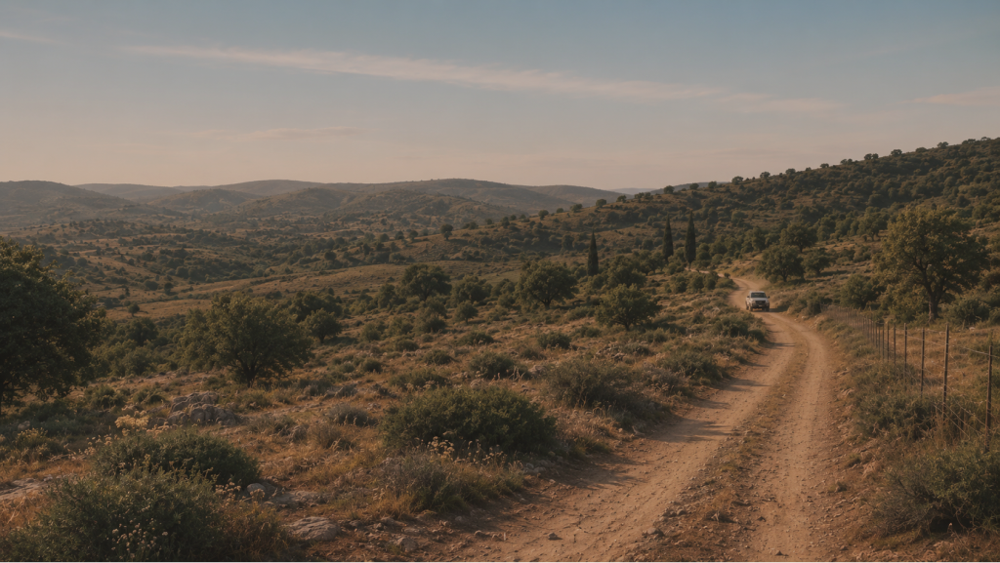
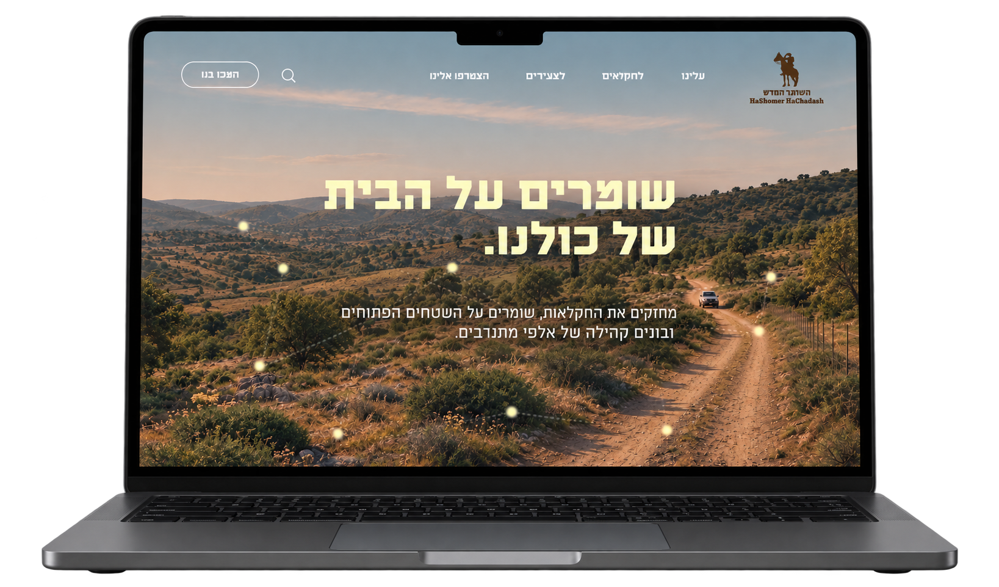
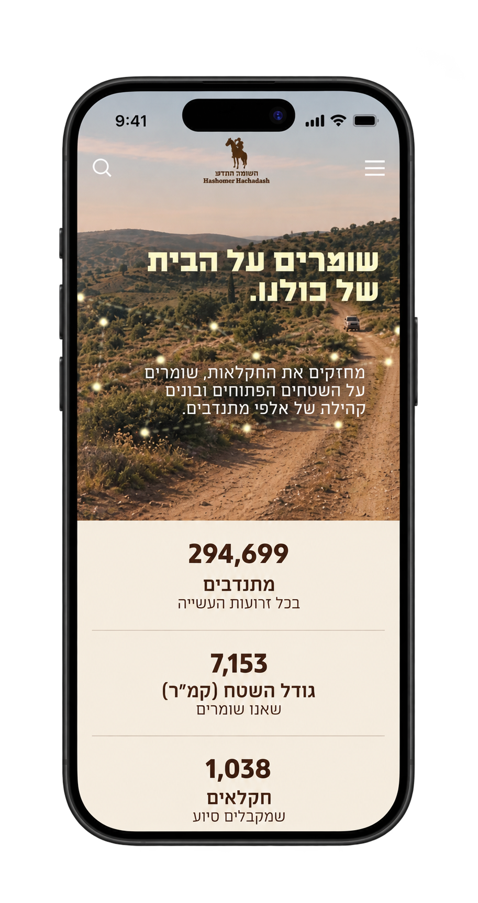
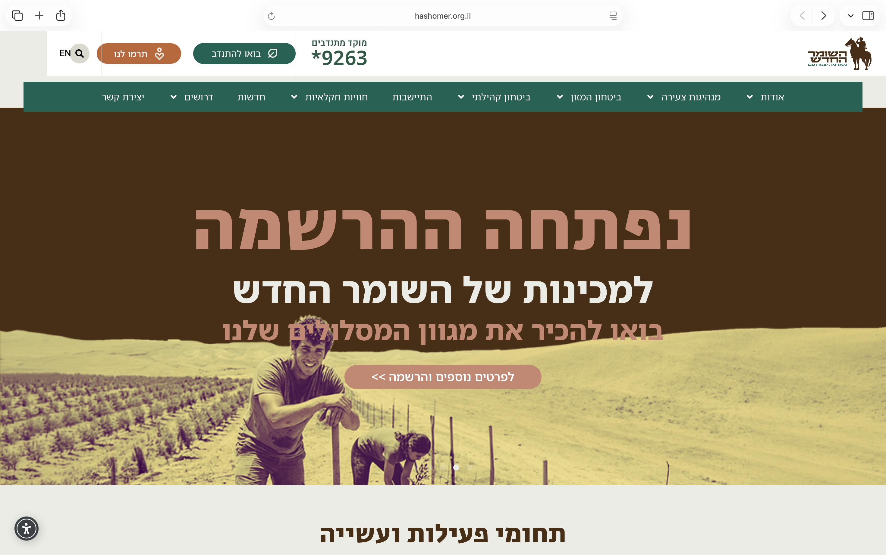
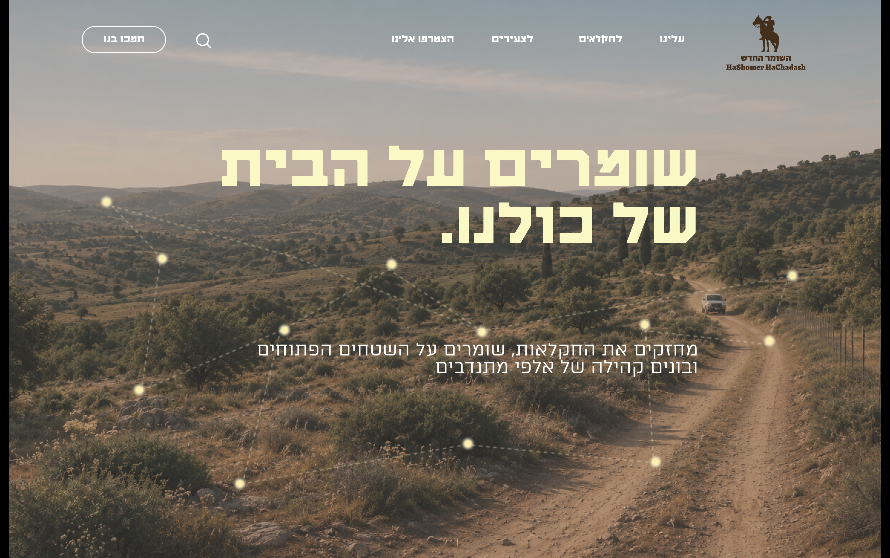

HASHOMER HACHADASH
Website Redesign
Back to portfolioA website redesign for an Israeli nonprofit organization

תמכו בנו
01 / THE PROJECT
Hashomer Hachadash is an Israeli nonprofit organization dedicated to supporting farmers, protecting agricultural land, and strengthening communities.
The project focused on redesigning its website to improve navigation, organize information, and make it easier for different audiences to find relevant content and opportunities to get involved.
02 / THE CHALLENGE
Making information easier to find
The challenge was to simplify the website’s navigation, improve content hierarchy, and create a clearer experience for different audiences.


03 / EXPLORE THE WEBSITE
A new look, a clearer experience
The redesigned website introduces a clearer visual hierarchy, simplified navigation, and a consistent design language across its key pages.
Explore full website Scroll to preview04 / MOBILE DESIGN
Designed for every screen
The mobile experience adapts the website's layout, navigation, and content hierarchy to smaller screens, keeping information clear and accessible.